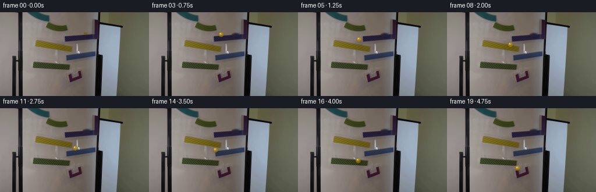
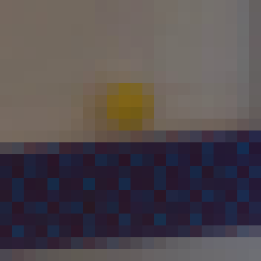
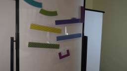
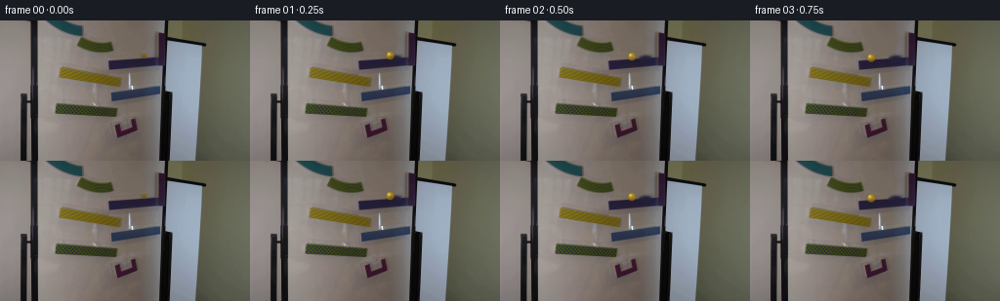
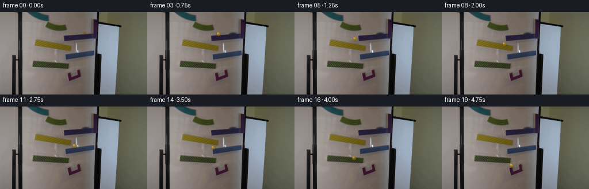

CODING AGENTS AS PIXEL WORLD MODELS
traex/GPT-5.6-Sol · 0106
点击播放 · 原生 RGB 像素
逐轮保存的候选
回放视频、检查图与代码变化。
每份候选均可单独播放。实际图片检查记录在下方工具轨迹中。
候选 01播放与检查图
点击播放 · 原生 RGB 像素

展开代码变化
--- 上一保存版本
+++ 本次保存版本
@@ -0,0 +1,138 @@
+from pathlib import Path
+
+import cv2
+import numpy as np
+from PIL import Image
+
+import artifact_io
+
+
+CASE_DIR = Path(__file__).resolve().parent
+W, H = 256, 144
+
+
+def remove_starting_marble(rgb: np.ndarray) -> np.ndarray:
+ """Recover the small patch of board/ramp hidden by the marble in frame zero."""
+ bgr = cv2.cvtColor(rgb, cv2.COLOR_RGB2BGR)
+ mask = np.zeros((H, W), np.uint8)
+ # This tightly covers the amber sphere and its soft optical halo. Telea
+ # reconstruction continues the gray board and the upper edge of the ramp.
+ cv2.ellipse(mask, (148, 35), (7, 6), 0, 0, 360, 255, -1, cv2.LINE_AA)
+ clean = cv2.inpaint(bgr, mask, 3.0, cv2.INPAINT_TELEA)
+ return cv2.cvtColor(clean, cv2.COLOR_BGR2RGB)
+
+
+def alpha_over(image: np.ndarray, color, alpha: np.ndarray) -> None:
+ """Alpha composite a constant RGB color into an image in place."""
+ a = np.clip(alpha, 0.0, 1.0)[..., None]
+ image[:] = np.clip(image.astype(np.float32) * (1.0 - a) +
+ np.asarray(color, np.float32) * a, 0, 255).astype(np.uint8)
+
+
+def draw_marble(frame: np.ndarray, cx: float, cy: float, travel: float,
+ vx: float, vy: float, airborne: bool) -> np.ndarray:
+ """Paint a tiny translucent yellow glass marble with shadow and highlight."""
+ out = frame.copy()
+ radius = 4.15
+ extent = 10
+ x0 = max(0, int(np.floor(cx - extent)))
+ x1 = min(W, int(np.ceil(cx + extent + 1)))
+ y0 = max(0, int(np.floor(cy - extent)))
+ y1 = min(H, int(np.ceil(cy + extent + 1)))
+ yy, xx = np.mgrid[y0:y1, x0:x1].astype(np.float32)
+ patch = out[y0:y1, x0:x1]
+
+ # Soft cast/contact shadow. It separates slightly from the ball in flight.
+ shadow_drop = 2.7 if airborne else 2.0
+ sx, sy = cx + 1.0, cy + shadow_drop
+ sr = np.sqrt(((xx - sx) / 1.25) ** 2 + ((yy - sy) / 0.78) ** 2)
+ shadow = 0.19 * np.exp(-0.5 * (sr / 3.1) ** 2)
+ alpha_over(patch, (33, 27, 18), shadow)
+
+ dx, dy = xx - cx, yy - cy
+ d = np.sqrt(dx * dx + dy * dy)
+ coverage = np.clip(radius + 0.65 - d, 0.0, 1.0)
+
+ # Dark amber outline and translucent honey-colored body. The board remains
+ # faintly visible through it, making the sphere read as glass rather than paint.
+ rim = np.clip((d - (radius - 1.35)) / 1.25, 0.0, 1.0) * coverage
+ alpha_over(patch, (83, 60, 7), rim * 0.52)
+ body = coverage * (1.0 - 0.35 * np.clip(d / radius, 0, 1))
+ alpha_over(patch, (205, 159, 12), body * 0.63)
+
+ # Warm lower refraction and a dim rotating internal streak suggest rolling.
+ lower = np.exp(-((dx - 0.4) ** 2 / 8.0 + (dy - 1.65) ** 2 / 1.7)) * coverage
+ alpha_over(patch, (118, 76, 2), lower * 0.28)
+ angle = travel / radius
+ stripe_coord = dx * np.cos(angle) + dy * np.sin(angle)
+ stripe = np.exp(-(stripe_coord ** 2) / 0.42) * np.clip(1.0 - d / radius, 0, 1)
+ alpha_over(patch, (247, 196, 37), stripe * 0.13)
+
+ # Broad glass sheen plus a crisp pin highlight from the room light.
+ sheen = np.exp(-((dx + 1.25) ** 2 + (dy + 1.2) ** 2) / 3.3) * coverage
+ alpha_over(patch, (255, 230, 117), sheen * 0.42)
+ glint = np.exp(-((dx + 1.35) ** 2 + (dy + 1.55) ** 2) / 0.52) * coverage
+ alpha_over(patch, (255, 252, 214), glint * 0.78)
+
+ # A tiny velocity-aligned amber trailing veil gives natural exposure blur
+ # without turning the marble into an artificial streak at this low frame rate.
+ speed = float(np.hypot(vx, vy))
+ if speed > 7.0:
+ ux, uy = vx / speed, vy / speed
+ trail = np.exp(-((dx + ux * 2.1) ** 2 + (dy + uy * 2.1) ** 2) / 7.0)
+ trail *= np.clip(radius + 0.8 - d, 0, 1)
+ alpha_over(patch, (184, 137, 9), trail * 0.055)
+ return out
+
+
+def main() -> None:
+ first = np.asarray(Image.open(CASE_DIR / "first_frame.png").convert("RGB"), dtype=np.uint8)
+ assert first.shape == (H, W, 3)
+ clean = remove_starting_marble(first)
+
+ # Hand-fit centers follow the visible ramp surfaces. Brief parabolic-looking
+ # transfers connect alternating slopes while the camera and every magnet stay fixed.
+ positions = np.array([
+ [148.0, 35.0], # exact source frame: marble held at upper ramp
+ [143.0, 35.4],
+ [134.5, 36.4],
+ [123.5, 37.8],
+ [112.5, 40.0], # left end of purple ramp
+ [104.5, 46.2], # free fall toward yellow ramp
+ [98.5, 52.8], # impact; horizontal motion reverses on the slope
+ [101.5, 53.7],
+ [108.5, 55.2],
+ [118.0, 57.4], # right end of yellow ramp
+ [124.0, 63.5],
+ [129.0, 68.0], # blue ramp impact
+ [125.0, 68.8],
+ [119.0, 70.0],
+ [114.0, 71.2], # left end of blue ramp
+ [108.0, 78.7],
+ [103.0, 89.6], # green ramp impact
+ [106.0, 91.2],
+ [114.0, 92.8],
+ [121.0, 102.5], # drops toward the purple catch cup
+ ], dtype=np.float32)
+ airborne = {5, 10, 15, 19}
+
+ # Accumulated path length drives the subtle rolling refraction.
+ lengths = np.zeros(len(positions), np.float32)
+ lengths[1:] = np.cumsum(np.linalg.norm(np.diff(positions, axis=0), axis=1))
+
+ frames = [first.copy()] # Contract: frame 00 is byte-for-byte pixel identical.
+ for i in range(1, 20):
+ velocity = positions[i] - positions[i - 1]
+ frame = draw_marble(clean, positions[i, 0], positions[i, 1],
+ float(lengths[i]), float(velocity[0]), float(velocity[1]),
+ i in airborne)
+ frames.append(frame)
+
+ frames = np.stack(frames).astype(np.uint8)
+ assert frames.shape == (20, H, W, 3)
+ assert np.array_equal(frames[0], first)
+ artifact_io.save(frames, CASE_DIR)
+
+
+if __name__ == "__main__":
+ main()
候选 02播放与检查图
点击播放 · 原生 RGB 像素

展开代码变化
--- 上一保存版本
+++ 本次保存版本
@@ -33,7 +33,7 @@
vx: float, vy: float, airborne: bool) -> np.ndarray:
"""Paint a tiny translucent yellow glass marble with shadow and highlight."""
out = frame.copy()
- radius = 4.15
+ radius = 3.55
extent = 10
x0 = max(0, int(np.floor(cx - extent)))
x1 = min(W, int(np.ceil(cx + extent + 1)))
@@ -46,7 +46,7 @@
shadow_drop = 2.7 if airborne else 2.0
sx, sy = cx + 1.0, cy + shadow_drop
sr = np.sqrt(((xx - sx) / 1.25) ** 2 + ((yy - sy) / 0.78) ** 2)
- shadow = 0.19 * np.exp(-0.5 * (sr / 3.1) ** 2)
+ shadow = 0.15 * np.exp(-0.5 * (sr / 2.8) ** 2)
alpha_over(patch, (33, 27, 18), shadow)
dx, dy = xx - cx, yy - cy
@@ -56,9 +56,9 @@
# Dark amber outline and translucent honey-colored body. The board remains
# faintly visible through it, making the sphere read as glass rather than paint.
rim = np.clip((d - (radius - 1.35)) / 1.25, 0.0, 1.0) * coverage
- alpha_over(patch, (83, 60, 7), rim * 0.52)
+ alpha_over(patch, (83, 60, 7), rim * 0.44)
body = coverage * (1.0 - 0.35 * np.clip(d / radius, 0, 1))
- alpha_over(patch, (205, 159, 12), body * 0.63)
+ alpha_over(patch, (194, 148, 11), body * 0.50)
# Warm lower refraction and a dim rotating internal streak suggest rolling.
lower = np.exp(-((dx - 0.4) ** 2 / 8.0 + (dy - 1.65) ** 2 / 1.7)) * coverage
@@ -70,9 +70,9 @@
# Broad glass sheen plus a crisp pin highlight from the room light.
sheen = np.exp(-((dx + 1.25) ** 2 + (dy + 1.2) ** 2) / 3.3) * coverage
- alpha_over(patch, (255, 230, 117), sheen * 0.42)
+ alpha_over(patch, (255, 230, 117), sheen * 0.30)
glint = np.exp(-((dx + 1.35) ** 2 + (dy + 1.55) ** 2) / 0.52) * coverage
- alpha_over(patch, (255, 252, 214), glint * 0.78)
+ alpha_over(patch, (255, 252, 214), glint * 0.58)
# A tiny velocity-aligned amber trailing veil gives natural exposure blur
# without turning the marble into an artificial streak at this low frame rate.
可观测工具轨迹
实际执行的命令与返回图片。
命令 1exit 0
/bin/bash -lc "cat prompt.txt && printf '\\n--- GENERATION RULES ---\\n' && cat GENERATION_RULES.md"
命令 2exit 0
/bin/bash -lc "find . -maxdepth 2 -type f -printf '%P\\n' | sort && printf '\\n--- ffmpeg ---\\n' && ffmpeg -version | head -3 && printf '\\n--- python libs ---\\n' && python - <<'PY' mods=['cv2','PIL','numpy','imageio','moviepy'] for m in mods: try: mod=__import__(m) print(m,'OK',getattr(mod,'__version__','')) except Exception as e: print(m,'NO',e) PY"
命令 3exit 0
/bin/bash -lc "cat artifact_io.py && python - <<'PY'
from PIL import Image
im=Image.open('first_frame.png')
print(im.mode, im.size)
PY"命令 4exit 0
/bin/bash -lc "python - <<'PY'
from PIL import Image
im=Image.open('first_frame.png')
im.resize((1024,576),Image.Resampling.NEAREST).save('.tmp/enlarged.png')
PY"命令 5exit 0
/bin/bash -lc "python - <<'PY'
from PIL import Image
im=Image.open('first_frame.png')
im.crop((137,27,159,49)).resize((440,440),Image.Resampling.NEAREST).save('.tmp/marble_crop.png')
PY"命令 6exit 0
/bin/bash -lc "python - <<'PY'
import cv2, numpy as np
im=cv2.imread('first_frame.png')
hsv=cv2.cvtColor(im,cv2.COLOR_BGR2HSV)
for y in range(28,45):
s=''
for x in range(138,157):
h,sat,v=hsv[y,x]
s += '#' if (15<h<50 and sat>50 and v>50) else ('.' if sat<40 else '+')
print(y,s)
print('pixels')
for y in range(31,42):
print(y,[tuple(im[y,x][::-1]) for x in range(141,154)])
PY"命令 7exit 2
/bin/bash -lc "cat > /tmp/test_clean.py <<'PY'
import cv2
im=cv2.imread('first_frame.png')
mask=im[:,:,0]*0
cv2.ellipse(mask,(148,35),(7,6),0,0,360,255,-1)
out=cv2.inpaint(im,mask,3,cv2.INPAINT_TELEA)
cv2.imwrite('.tmp/clean.png',out)
PY
python /tmp/test_clean.py"命令 8exit 0
/bin/bash -lc "cat > .tmp/test_clean.py <<'PY'
import cv2
im=cv2.imread('first_frame.png')
mask=im[:,:,0]*0
cv2.ellipse(mask,(148,35),(7,6),0,0,360,255,-1)
out=cv2.inpaint(im,mask,3,cv2.INPAINT_TELEA)
cv2.imwrite('.tmp/clean.png',out)
PY
python .tmp/test_clean.py"命令 9exit 0
/bin/bash -lc "cat > generate.py <<'PY'
from pathlib import Path
import cv2
import numpy as np
from PIL import Image
import artifact_io
CASE_DIR = Path(__file__).resolve().parent
W, H = 256, 144
def remove_starting_marble(rgb: np.ndarray) -> np.ndarray:
\"\"\"Recover the small patch of board/ramp hidden by the marble in frame zero.\"\"\"
bgr = cv2.cvtColor(rgb, cv2.COLOR_RGB2BGR)
mask = np.zeros((H, W), np.uint8)
# This tightly covers the amber sphere and its soft optical halo. Telea
# reconstruction continues the gray board and the upper edge of the ramp.
cv2.ellipse(mask, (148, 35), (7, 6), 0, 0, 360, 255, -1, cv2.LINE_AA)
clean = cv2.inpaint(bgr, mask, 3.0, cv2.INPAINT_TELEA)
return cv2.cvtColor(clean, cv2.COLOR_BGR2RGB)
def alpha_over(image: np.ndarray, color, alpha: np.ndarray) -> None:
\"\"\"Alpha composite a constant RGB color into an image in place.\"\"\"
a = np.clip(alpha, 0.0, 1.0)[..., None]
image[:] = np.clip(image.astype(np.float32) * (1.0 - a) +
np.asarray(color, np.float32) * a, 0, 255).astype(np.uint8)
def draw_marble(frame: np.ndarray, cx: float, cy: float, travel: float,
vx: float, vy: float, airborne: bool) -> np.ndarray:
\"\"\"Paint a tiny translucent yellow glass marble with shadow and highlight.\"\"\"
out = frame.copy()
radius = 4.15
extent = 10
x0 = max(0, int(np.floor(cx - extent)))
x1 = min(W, int(np.ceil(cx + extent + 1)))
y0 = max(0, int(np.floor(cy - extent)))
y1 = min(H, int(np.ceil(cy + extent + 1)))
yy, xx = np.mgrid[y0:y1, x0:x1].astype(np.float32)
patch = out[y0:y1, x0:x1]
# Soft cast/contact shadow. It separates slightly from the ball in flight.
shadow_drop = 2.7 if airborne else 2.0
sx, sy = cx + 1.0, cy + shadow_drop
sr = np.sqrt(((xx - sx) / 1.25) ** 2 + ((yy - sy) / 0.78) ** 2)
shadow = 0.19 * np.exp(-0.5 * (sr / 3.1) ** 2)
alpha_over(patch, (33, 27, 18), shadow)
dx, dy = xx - cx, yy - cy
d = np.sqrt(dx * dx + dy * dy)
coverage = np.clip(radius + 0.65 - d, 0.0, 1.0)
# Dark amber outline and translucent honey-colored body. The board remains
# faintly visible through it, making the sphere read as glass rather than paint.
rim = np.clip((d - (radius - 1.35)) / 1.25, 0.0, 1.0) * coverage
alpha_over(patch, (83, 60, 7), rim * 0.52)
body = coverage * (1.0 - 0.35 * np.clip(d / radius, 0, 1))
alpha_over(patch, (205, 159, 12), body * 0.63)
# Warm lower refraction and a dim rotating internal streak suggest rolling.
lower = np.exp(-((dx - 0.4) ** 2 / 8.0 + (dy - 1.65) ** 2 / 1.7)) * coverage
alpha_over(patch, (118, 76, 2), lower * 0.28)
angle = travel / radius
stripe_coord = dx * np.cos(angle) + dy * np.sin(angle)
stripe = np.exp(-(stripe_coord ** 2) / 0.42) * np.clip(1.0 - d / radius, 0, 1)
alpha_over(patch, (247, 196, 37), stripe * 0.13)
# Broad glass sheen plus a crisp pin highlight from the room light.
sheen = np.exp(-((dx + 1.25) ** 2 + (dy + 1.2) ** 2) / 3.3) * coverage
alpha_over(patch, (255, 230, 117), sheen * 0.42)
glint = np.exp(-((dx + 1.35) ** 2 + (dy + 1.55) ** 2) / 0.52) * coverage
alpha_over(patch, (255, 252, 214), glint * 0.78)
# A tiny velocity-aligned amber trailing veil gives natural exposure blur
# without turning the marble into an artificial streak at this low frame rate.
speed = float(np.hypot(vx, vy))
if speed > 7.0:
ux, uy = vx / speed, vy / speed
trail = np.exp(-((dx + ux * 2.1) ** 2 + (dy + uy * 2.1) ** 2) / 7.0)
trail *= np.clip(radius + 0.8 - d, 0, 1)
alpha_over(patch, (184, 137, 9), trail * 0.055)
return out
def main() -> None:
first = np.asarray(Image.open(CASE_DIR / \"first_frame.png\").convert(\"RGB\"), dtype=np.uint8)
assert first.shape == (H, W, 3)
clean = remove_starting_marble(first)
# Hand-fit centers follow the visible ramp surfaces. Brief parabolic-looking
# transfers connect alternating slopes while the camera and every magnet stay fixed.
positions = np.array([
[148.0, 35.0], # exact source frame: marble held at upper ramp
[143.0, 35.4],
[134.5, 36.4],
[123.5, 37.8],
[112.5, 40.0], # left end of purple ramp
[104.5, 46.2], # free fall toward yellow ramp
[98.5, 52.8], # impact; horizontal motion reverses on the slope
[101.5, 53.7],
[108.5, 55.2],
[118.0, 57.4], # right end of yellow ramp
[124.0, 63.5],
[129.0, 68.0], # blue ramp impact
[125.0, 68.8],
[119.0, 70.0],
[114.0, 71.2], # left end of blue ramp
[108.0, 78.7],
[103.0, 89.6], # green ramp impact
[106.0, 91.2],
[114.0, 92.8],
[121.0, 102.5], # drops toward the purple catch cup
], dtype=np.float32)
airborne = {5, 10, 15, 19}
# Accumulated path length drives the subtle rolling refraction.
lengths = np.zeros(len(positions), np.float32)
lengths[1:] = np.cumsum(np.linalg.norm(np.diff(positions, axis=0), axis=1))
frames = [first.copy()] # Contract: frame 00 is byte-for-byte pixel identical.
for i in range(1, 20):
velocity = positions[i] - positions[i - 1]
frame = draw_marble(clean, positions[i, 0], positions[i, 1],
float(lengths[i]), float(velocity[0]), float(velocity[1]),
i in airborne)
frames.append(frame)
frames = np.stack(frames).astype(np.uint8)
assert frames.shape == (20, H, W, 3)
assert np.array_equal(frames[0], first)
artifact_io.save(frames, CASE_DIR)
if __name__ == \"__main__\":
main()
PY
python generate.py
python - <<'PY'
import numpy as np
from PIL import Image
z=np.load('pixels.npz')['pixels']
im=np.array(Image.open('first_frame.png'))
p=(im[:,:,0].astype(np.uint32)<<16)|(im[:,:,1].astype(np.uint32)<<8)|im[:,:,2]
print('pixels',z.shape,z.dtype,'first exact',np.array_equal(z[:,:,0],p),'frames',len(list(__import__('pathlib').Path('frames').glob('*.png'))))
PY"命令 10exit 0
/bin/bash -lc "python generate.py && python - <<'PY'
from pathlib import Path
from PIL import Image
import numpy as np
f=[]
for p in sorted(Path('frames').glob('*.png')):
a=np.asarray(Image.open(p))
assert a.shape==(144,256,3) and a.dtype==np.uint8
f.append(a)
first=np.asarray(Image.open('first_frame.png').convert('RGB'))
print('frame_count=',len(f))
print('frame00_exact=',np.array_equal(f[0], first))
print('all_rgb_u8=',all(x.dtype==np.uint8 and x.shape==(144,256,3) for x in f))
print('changed_pixels_per_transition=',[int(np.any(f[i]"'!=f[i-1],axis=2).sum()) for i in range(1,20)])
print('"'outputs=',[(p.name,p.stat().st_size) for p in map(Path,['pixels.npz','index.html','inspection.png','transition_check.png'])])
PY"视觉工具实际返回图片 1

视觉工具实际返回图片 2

视觉工具实际返回图片 3

视觉工具实际返回图片 4

视觉工具实际返回图片 5

视觉工具实际返回图片 6

视觉工具实际返回图片 7

保存候选 2 份；完成命令 10 次；可验证图片返回 7 张。原始 API 响应与完整日志保留在本地。